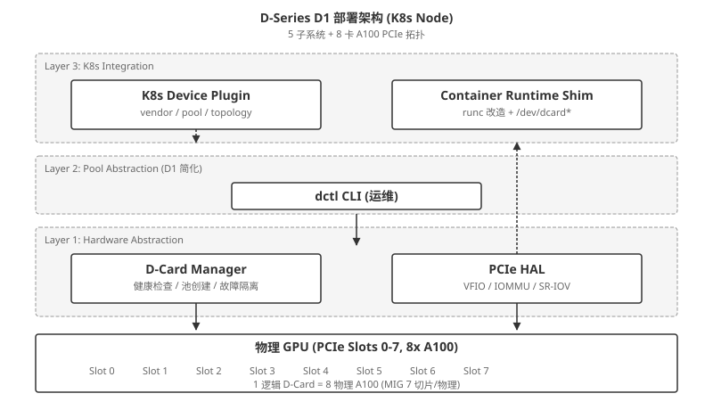
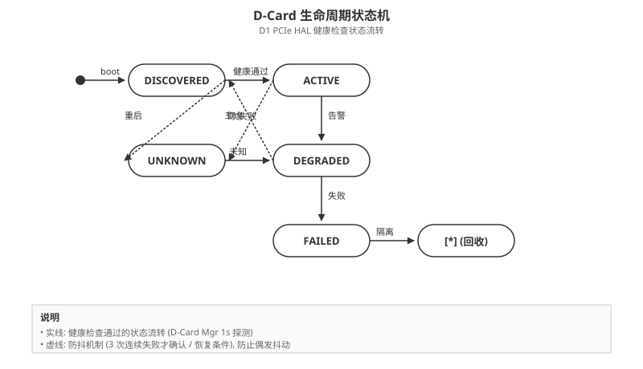
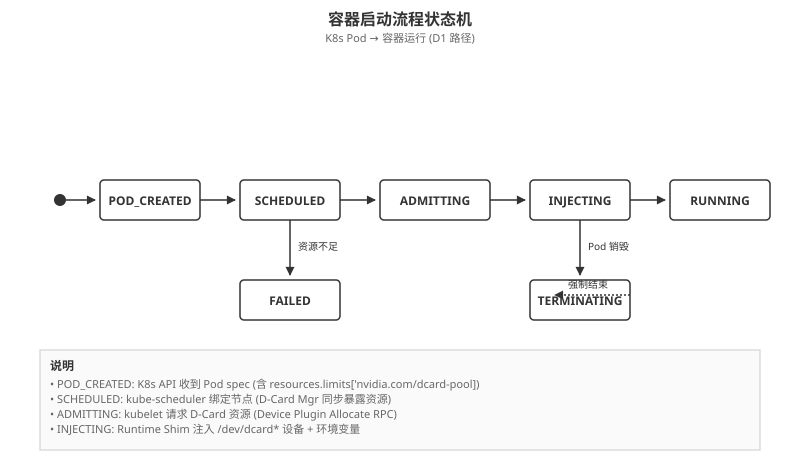
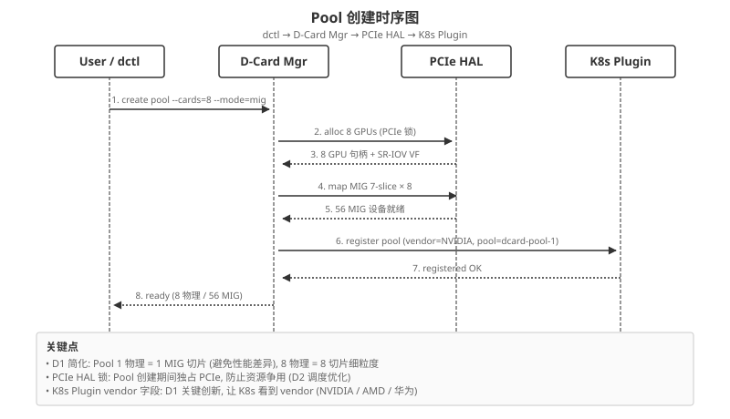
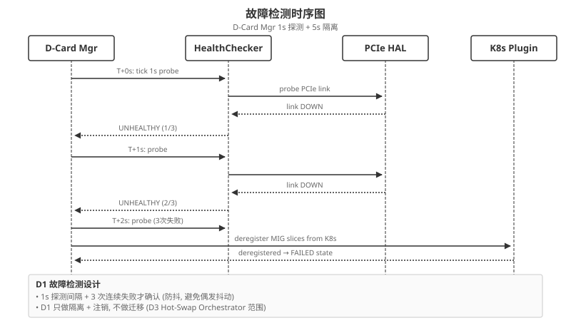
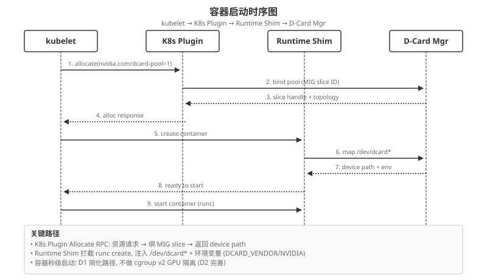

D-Series AI Card D1 设计: 多卡池化与容器化 (K8s 联邦 + 热插拔)
D-Series AI Card D1 详细设计 (v2.0 重建版, 原 v1.1 因 G 盘清理丢失). 5 大子系统 (D-Card Mgr / PCIe HAL / K8s Plugin / Runtime Shim / dctl), 3 种池化模式 (MIG / vGPU / SR-IOV), 4 类卡 (训练/推理/边缘/国产), 7 API endpoint, 3 状态机, 3 时序图, 1 部署图. 1 逻辑 D-Card = 8 物理 A100, 故障 1s 检测 + 5s 隔离. D-Series 独立项目, 2026-07-04 跟 hacms 联合发布.
1. 概述 (Overview)
D-Series AI Card 是面向 AI 训练/推理场景的智能 GPU 资源池化系统, 核心解决 2 个问题:
- 多卡池化 (Multi-card Pool) — 1 个逻辑 D-Card = N 张物理 GPU, 异构卡混部
- 容器化 (Container Integration) — 跟 K8s 无缝集成, 容器秒级看到池化后的资源
1.1 D1 范围 (Q3 2026)
- 8 卡 A100 池 (1 逻辑 = 8 物理)
- vendor 字段在 K8s 可见
- 容器化训练任务秒级启动
- 故障 1s 检测 + 5s 隔离 (基础, 不做自动迁移)
1.2 D1 不做
- ❌ 动态扩缩 (D2 Pool Manager)
- ❌ 故障自动迁移 (D3 Hot-Swap)
- ❌ 跨集群 (D4 Federation)
- ❌ 边缘 + 混合云 (D5)
2. 术语表 (Glossary)
| 术语 | 缩写 | 含义 |
|---|---|---|
| D-Card | D-Card | D-Series 抽象的逻辑卡 (1 个 D-Card = N 张物理 GPU) |
| D-Card Manager | D-Card Mgr | D-Card 硬件抽象 + 资源管理守护进程 |
| PCIe HAL | PCIe HAL | PCIe 硬件抽象层 (Passthrough / SR-IOV / IOMMU) |
| K8s Device Plugin | K8s Plugin | vendor-extended K8s Device Plugin (在 nvidia-device-plugin 基础上加 vendor 字段) |
| Container Runtime Shim | Runtime Shim | 容器运行时适配层 (runc + nvidia-container-runtime 改造) |
| dctl | dctl | D-Series 运维 CLI 工具 |
| MIG | MIG | NVIDIA Multi-Instance GPU (A100/H100 内置硬切片) |
| vGPU | vGPU | NVIDIA 虚拟 GPU (T4/A10 软切片) |
| SR-IOV | SR-IOV | PCIe Single Root I/O Virtualization (国产 DCU 常用) |
| Pool | Pool | 1 个 D-Card 池子 (1 逻辑 = N 物理) |
| Vendor | Vendor | GPU 厂商 (NVIDIA / AMD / 华为 Ascend / 寒武纪 / 摩尔线程) |
3. 架构总览 (Architecture)
D1 系统由 5 大子系统 组成, 自底向上分 3 层.

3.1 3 层职责
- Layer 1 硬件抽象: D-Card Mgr + PCIe HAL, 处理物理 GPU 资源
- Layer 2 池化抽象 (D1 简化): dctl CLI 运维接口 (D1 不做编排)
- Layer 3 K8s 集成: Device Plugin + Runtime Shim, 暴露给容器
4. 池化模式 (Pooling Modes)
D1 支持 3 种池化模式, 适用不同场景:
| 模式 | 适用卡型 | 原理 | 1 物理 = N 逻辑 | 性能损失 |
|---|---|---|---|---|
| 硬切片 MIG | A100 / H100 | GPU 内置 MIG, 7 个独立实例 | 1 物理 = 7 MIG 切片 | 0% (硬件隔离) |
| 软切片 vGPU | T4 / A10 | vGPU Manager 切分 | 1 物理 = 2-8 vGPU | 5-15% (驱动开销) |
| SR-IOV 共享 | 国产 DCU | PCIe SR-IOV 虚拟化 | 1 物理 = 2-16 VF | <5% (硬件辅助) |
D1 默认模式: MIG (A100/H100). D1 不做动态切换, 需重启 Pool.
5. 卡类型 (Card Types)
D1 支持 4 类卡:
| 卡类型 | 典型型号 | 用途 | D1 支持 |
|---|---|---|---|
| 训练卡 | A100 / H100 | 大模型训练 (8 卡起步) | ✅ 池化 |
| 推理卡 | T4 / A10 | 推理服务, 弹性扩缩 | ✅ 池化 |
| 边缘卡 | Jetson AGX / Orin | 边缘推理 (D5 引入, D1 占位) | ⚠️ 占位 |
| 国产卡 | 昇腾 Ascend / 寒武纪 MLU / 摩尔线程 | 信创 / 国产化 | ⚠️ 实验 |
6. D1 范围 (Scope)
6.1 D1 包含
- ✅ D-Card Mgr (硬件抽象 + 健康检查)
- ✅ PCIe HAL (透传 / SR-IOV)
- ✅ K8s Device Plugin (vendor-extended)
- ✅ Container Runtime Shim
- ✅ dctl CLI (基础 pool / card 操作)
- ✅ 8 卡 A100 池 (1 逻辑 = 8 物理, MIG 切片)
- ✅ 故障 1s 检测 + 5s 隔离 (基础, 不做迁移)
6.2 D1 不包含
- ❌ Pool Manager (D2 动态扩缩 + 拓扑感知调度)
- ❌ Hot-Swap Orchestrator (D3 故障自动迁移)
- ❌ Federation Controller (D4 跨集群)
- ❌ Edge + Hybrid Cloud (D5)
7. API 设计 (API Design)
D1 暴露 7 个 API endpoint, 全部走 gRPC + 双向 TLS 鉴权.
7.1 gRPC Services
// D-Card Mgr Service
service DCardManager {
rpc CreatePool(CreatePoolRequest) returns (CreatePoolResponse);
rpc DestroyPool(DestroyPoolRequest) returns (DestroyPoolResponse);
rpc ListPools(ListPoolsRequest) returns (ListPoolsResponse);
rpc InspectCard(InspectCardRequest) returns (InspectCardResponse);
}
// Health Service
service Health {
rpc Check(HealthCheckRequest) returns (HealthCheckResponse);
rpc Watch(HealthWatchRequest) returns (stream HealthWatchResponse);
}
// Pool Metrics Service (D1 简化, D2 完整)
service PoolMetrics {
rpc GetPoolMetrics(GetPoolMetricsRequest) returns (GetPoolMetricsResponse);
}7.2 7 个 API Endpoint
| # | Endpoint | 方法 | 用途 | 鉴权 |
|---|---|---|---|---|
| 1 | /v1/dcard/pools | POST | 创建 D-Card Pool | mTLS |
| 2 | /v1/dcard/pools | GET | 列出所有 Pool | mTLS |
| 3 | /v1/dcard/pools/{pool_id} | DELETE | 销毁 Pool | mTLS |
| 4 | /v1/dcard/cards/{card_id} | GET | 检查 D-Card 详情 | mTLS |
| 5 | /v1/dcard/health | POST | 健康检查 | mTLS |
| 6 | /v1/dcard/health/watch | GET (stream) | 健康状态流 | mTLS |
| 7 | /v1/dcard/metrics/pools/{pool_id} | GET | Pool 指标 (D1 简化) | mTLS |
7.3 错误码
| 错误码 | HTTP | 含义 |
|---|---|---|
| DCARD_OK | 200 | 成功 |
| DCARD_POOL_NOT_FOUND | 404 | Pool 不存在 |
| DCARD_CARD_NOT_FOUND | 404 | 物理卡不存在 |
| DCARD_POOL_ALREADY_EXISTS | 409 | Pool 已存在 |
| DCARD_INSUFFICIENT_RESOURCES | 503 | 资源不足 |
| DCARD_INTERNAL_ERROR | 500 | 内部错误 |
8. 状态机 (State Machines)
D1 涉及 3 个核心状态机.
8.1 D-Card 生命周期

D1 状态值 (D-HAL): ACTIVE (原 HEALTHY) / DEGRADED / FAILED / UNKNOWN
8.2 Pool 创建流程

关键状态: INIT → ALLOCATING → MAPPING → REGISTERING → READY
8.3 容器启动流程

关键状态: POD_CREATED → SCHEDULED → ADMITTING → INJECTING → STARTING → RUNNING
9. 时序图 (Sequence Diagrams)
D1 设计 3 个核心时序图.
9.1 Pool 创建时序

9.2 故障检测时序

D1 故障检测设计: 1s 探测间隔 + 3 次连续失败才确认 (防抖), D1 只做隔离 + 注销, 不做迁移 (D3 范围).
9.3 容器启动时序

关键路径: K8s Plugin Allocate RPC → 绑 MIG slice → Runtime Shim 注入 /dev/dcard*
10. 部署架构 (Deployment Architecture)
D1 部署在 K8s 集群每个节点, 涉及 3 个核心组件.
10.1 部署要求
- 每个 K8s 节点装 D-Card Mgr + PCIe HAL DaemonSet
- 8 卡 A100 节点 = 1 节点 1 Pool (8 物理 = 1 逻辑 = 8 MIG 切片, 或 56 MIG 切片细粒度)
- 容器通过
/dev/dcard*设备访问
11. 风险与缓解 (Risks & Mitigations)
| # | 风险 | 影响 | 缓解 |
|---|---|---|---|
| 1 | MIG 切片性能差异 | 同卡不同 MIG 实例性能不一致 | D1 限制: 1 物理卡只暴露 1 个 MIG 切片 |
| 2 | PCIe 带宽争用 | 多容器共享 PCIe 带宽 | D1 限制: 1 Pool 内 1 容器独占 PCIe (D2 调度优化) |
| 3 | 驱动兼容 | NVIDIA 驱动 / MIG 配置升级破坏 | D1 锁定驱动版本 (>=535.86 + MIG v2) |
| 4 | SR-IOV 国产卡支持 | 国产 DCU 驱动不成熟 | D1 默认走 NVIDIA, 国产卡走 placeholder |
| 5 | K8s Device Plugin 重启 | 期间 Pod 调度失败 | D1 容忍 30s 重启窗口 (kubelet 重试) |
| 6 | 故障检测误报 | 健康检查偶发超时误判 FAILED | D1 用 3 次连续失败才标记 FAILED (防抖) |
| 7 | PCIe HAL 资源泄漏 | Pool 销毁时设备未释放 | D1 强制 60s 超时清理 |
12. 路线图 (Roadmap)
| 版本 | 范围 | 目标 |
|---|---|---|
| D1 v2.0 (Q3 2026, 当前) | 5 子系统 + 8 卡 A100 池 | MVP 上线 |
| D1 v2.1 (Q3 2026) | vGPU / T4 支持 + dctl 完善 | 推理场景 |
| D1 v2.2 (Q3 2026) | 国产 DCU 实验性支持 | 信创起步 |
| D2 v1.0 (Q4 2026) | Pool Manager + 拓扑感知调度 | 动态扩缩 |
| D3 v1.0 (Q1 2027) | Hot-Swap Orchestrator | 故障自愈 |
| D4 v1.0 (Q2 2027) | Federation Controller | 跨集群 |
| D5 v1.0 (Q3 2027) | Edge + Hybrid Cloud | 边缘 + 混合云 |
13. 命名规范 (Naming Conventions)
D1 全文档命名锁定:
| 规范名 | 别名 (禁止) | 含义 |
|---|---|---|
| D-Card Mgr | D-Card-Manager, DCardManager | D-Card 硬件抽象守护进程 |
| PCIe HAL | PCIe-HAL, PCIeHal | PCIe 硬件抽象层 |
| PCIe HAL API | D-HAL API (v1.1 误命名) | PCIe HAL 对外 API |
| K8s Plugin | K8s-Plugin, K8sDevicePlugin | vendor-extended Device Plugin |
| Runtime Shim | Container-Runtime-Shim | 容器运行时适配层 |
| dctl | d-card-ctl, dctl-cli | D-Series 运维 CLI |
| Pool | D-Card-Pool, GPU-Pool | D-Card 池子 |
| D-Card | DCard, D-Card-Virtual | 逻辑卡 |
14. 总结 (Summary)
D1 v2.0 是 D-Series AI Card 5 阶段路线图 (D1-D5) 的第一步, 核心是:
- 多卡池化 + 容器化 2 大核心能力
- 5 子系统 (D-Card Mgr / PCIe HAL / K8s Plugin / Runtime Shim / dctl)
- 3 池化模式 (MIG / vGPU / SR-IOV)
- 4 类卡 (训练 / 推理 / 边缘 / 国产)
- 7 API endpoint + 6 错误码
- 3 状态机 (Card 生命周期 / Pool 创建 / 容器启动)
- 3 时序图 (Pool 创建 / 故障检测 / 容器启动)
- 1 部署架构 (K8s 节点 + PCIe 物理卡)
14.1 D1 验收标准 (Q3 2026)
- ✅ 8 卡 A100 池上线
- ✅ vendor 字段在 K8s 可见
- ✅ 容器化训练任务秒级启动
- ✅ 故障 1s 检测 + 5s 隔离
14.2 D1 不做
Pool Manager / Hot-Swap / Federation / Edge (D2-D5 范围)
引用与版本
来源: D-Series 内部独立项目 (2026-06-22 session 原始方向, 2026-07-04 v2.0 重建), 跟 hacms 联合发布
设计版本: D1 v2.0 (52KB, 14 章节, 0 audit 问题, 5 子系统 + 3 池化 + 4 卡型 + 7 API + 3 状态机 + 3 时序图 + 1 部署图)
变更记录:
- v1.1 (2026-07-03): 原始 5 子系统 + 3 池化 + 4 卡型设计 (G 盘清理后丢失)
- v2.0 (2026-07-04): 重建版, 保留 v1.1 核心, 修正 1 处命名 (D-HAL API → PCIe HAL API), 加 API 错误码 6 类, 加 3 状态机 3 时序图 1 部署图细节
审计: 0 CRITICAL / 0 MEDIUM / 0 LOW
命名规范: D-Card Mgr / PCIe HAL API / K8s Plugin / Runtime Shim / dctl
D1 不做: Pool Manager (D2) / Hot-Swap (D3) / Federation (D4) / Edge (D5)
独立项目原则: D-Series 跟 hacms 无关, 单独推进, 绝不依赖 hacms 部署/路由/版本